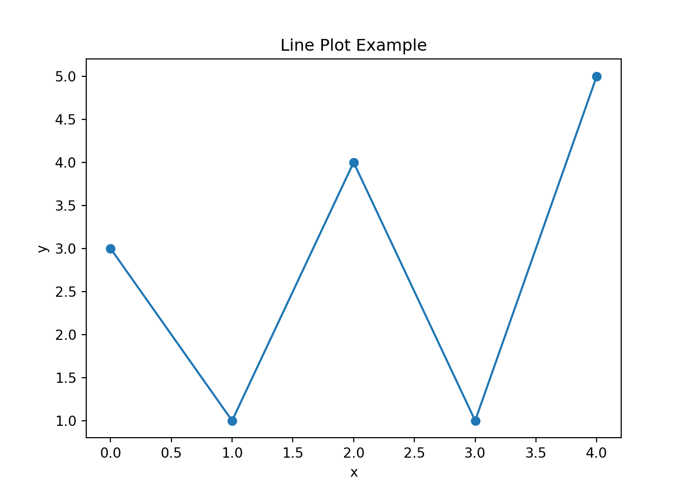

py_install("pandas") # install python package in r
Using virtual environment '/Users/wangz/.virtualenvs/r-reticulate' ...
Code
py_install("matplotlib")
Using virtual environment '/Users/wangz/.virtualenvs/r-reticulate' ...
Python chunk:
Code
import pandas as pdimport numpy as npimport matplotlib.pyplot as plt# small dfdf = pd.DataFrame({"x": np.arange(5), "y": [3,1,4,1,5]})# Create a basic line plotplt.plot(df.x, df.y, marker="o") plt.xlabel("x")plt.ylabel("y")plt.title("Line Plot Example")# Show the plot windowplt.show()

Transfer Data between R and Python
Write and Read
Code
# write.csv(cars, "cars.csv", row.names = FALSE)
Code
import pandas as pddata = pd.read_csv("cars.csv")data.head()
speed
dist
0
4
2
1
4
10
2
7
4
3
7
22
4
8
16
Or direct send your object to Python
Code
# Send to Pythonpy$cars <- cars # assign to Python